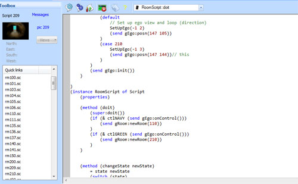
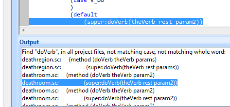
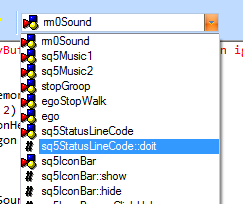
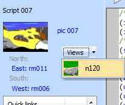

Script editor¶
SCICompanion includes a script editor which provides a number of improvements over the one in SCI Studio:
- Automatic parenthesis highlighting as you type
- Add new words to the vocabulary directly from the script
- Find text across all script files
- Better tabbing support (indent blocks of text)
- Insert object wizards
- Open header files from code
- Autocomplete as you type
- Hover tips
- Quick navigation to the various methods and procedures in the script
Adding a new room and other scripts¶
To add a room to your game, click on the New room  button in the main toolbar. A dialog will come up offering various options for your new room.
In SCI1.1, creating a new room automatically also creates the following:
button in the main toolbar. A dialog will come up offering various options for your new room.
In SCI1.1, creating a new room automatically also creates the following:
- a polygon header file (nnn.shp)
- a message header file (nnn.shm)
- a message resource of the same number
To create a new blank script, click the New empty script button. A dialog asking for the script number and name will come up.
SCI Script¶
The syntax used for source code in SCICompanion is nearly identical to that used in SCI Studio. It uses a syntax that is a cross between LISP and SmallTalk. Its design was probably based on an attempt to recreate the language that was used by Sierra’s programmers. Since that time however, the community has discovered more original code samples that give better clues as to the exact syntax used by Sierra (it was closer to SmallTalk than the current syntax). It’s possible that a future version of SCICompanion may offer a more historically accurate syntax as an option, but for now it was deemed that compatiblity with SCI Studio (to ensure backwards compatiblity for SCI0 fan games) was more important.
For more information on the syntax, see The SCI Compiler.
Compiling a script¶
To compile a single script, click on the Compile  button in the scripts toolbar, or press F8.
If successful, a message will be displayed at the bottom of the editor.
If the compilation fails, a list of errors will be displayed. Clicking on the errors will take you to the line of the script with the error.
button in the scripts toolbar, or press F8.
If successful, a message will be displayed at the bottom of the editor.
If the compilation fails, a list of errors will be displayed. Clicking on the errors will take you to the line of the script with the error.
To recompile the entire game, click the Compile all  button in the scripts toolbar. A progress dialog will come up, and you can cancel the compile operation if you wish.
button in the scripts toolbar. A progress dialog will come up, and you can cancel the compile operation if you wish.
Finding text¶
To find text within a particular script, click CTRL-F, or choose Edit->Find. Once a word is highlighted, pressing F3 or SHIFT-F3 will find the next or previous occurence in the file.
To replace text, press CTRL-H or choose Edit->Replace.
To find text across all script files press CTRL-SHIFT-F, or choose Edit->Find in files. The results are displayed at the bottom of the editor, and you can click on them to take you to that line of code.
Adding words to the vocabulary¶
Important
This section only applies to SCI0
Since adding new words to the vocabulary is a frequent task (scripts won’t compile if words in their Said strings aren’t in the vocabulary), SCICompanion lets you right-click on any word in the script, and add it to the vocabulary. You can choose the word class to which to add it. You can even add it as a synonym of another word.

Insert object¶
To further streamline the scripting workflow, SCICompanion lets you insert entire objects (Props, Actors, Scripts, and more) in code via the right-click menu.

Click on the location in the script where you want the new object, then choose Insert object from the right-click menu. This will open a list of objects to choose from, or you can choose Custom ... in order to have more control over which methods are included on the object.

An Actor class inserted via the Insert Object menu.
Insert method¶
Similar to the Insert object, you can use the right-click menu to insert common methods at the current cursor position.

A doVerb method inserted via the Insert Method menu.
Script browsing information¶
Script browsing information can be turned on or off (along with its related settings) in the Preferences dialog. It is on by default.
Script browsing is a powerful feature that analyzes the scripts and header files in your project, and will be able to provide auto code completion and contextual information about objects in your script. The browse information is compiled when you open the game, and its progress can be seen in the status bar. It will show you any errors. Until these errors are corrected, browse information may be incomplete and features which depend on it may not work. To force SCICompanion to recompile the browse information for a particular script after you fix errors, just save the script again.
Auto code completion¶
As you type, SCICompanion will suggest words (methods, objects names, variable names, etc...) based on your current context. Hit Enter to accept the suggestion, or the up and down arrow keys to choose another suggestion.

Goto definition¶
Right clicking on a procedure, object or variable will offer the option of going to where it is defined.

You can also right-click on an include statement header file name, or a use statement name and SCICompanion will open that script.

Jump to method¶
At the top of the script editor is a combobox that lists all the functions and objects in the current script file. It displays the name of the function or object where the cursor is currently located. You can use this list to quickly jump to another function in the script.
Quick links to pics and views¶
At the top of the script Toolbox pane are links to resources relevant to the current script. Here you will find the link to the pic resource (if this is a room), the views used in any Prop or Act instances, and links to the scripts of any rooms to the north/east/south/west. If the resource is already being edited, it will switch you to that resource. Otherwise, it will open the appropriate editor for that resource.
In this section for SCI1.1 games, you’ll also find a link to the messages resource for this room.
Debug room¶
Important
This section currently only applies to the SCI1.1 template game
Often when testing your game, you just want to jump right in to the room you’re currently creating. You can do so
via the Debug Room  button in the Script Editor toolbar. This of course requires that your room be
able to handle being transported directly to it without arriving there through gameplay.
button in the Script Editor toolbar. This of course requires that your room be
able to handle being transported directly to it without arriving there through gameplay.
If you need to set up certain global flags or inventory items that are necessary for being in that room,
you can do so in the DebugRoomInit() procedure in the debugroominit.sc script. Add a case for your room number
and set up additional state as necessary. This procedure is only called when the game is started with the Debug Room functionality.
This functionality can be a real help when trying to iterate quickly on your game.